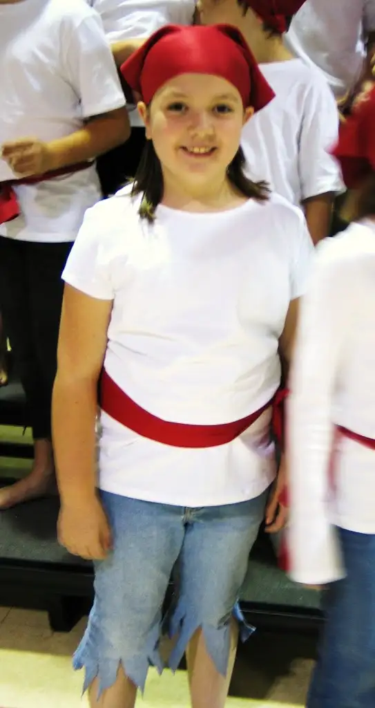

{kind=link}
Welcome back to “7 Quick Takes Friday,” an occasional feature that offers a glimpse of where my thoughts have been lately.
—1—
{kind=link}
While in the van the other day, the three youngest children were having a conversation which involved the word imagination. The oldest two were discussing with zeal thoughts from their imaginations. Five minutes into it, Nick, 4, a child born with a permanent chip on his forever-tiny “baby of the family” shoulders, exclaimed in a whiny voice with furrowed brows:
“How come I never have imaginations?!”
Postscript: It has become extremely hard for Beth, 9, not to chuckle when such utterances emerge from her littlest brother’s mouth. However, she’s learned that if she does, this makes the chip grow larger…and so we simply glance at one another with a quiet smile and silently agree to keep our giggles on the inside.
Another from Nick, heard yesterday in the van after he’d eaten a great deal of something salty and felt in dire need of something to wash it down:
“I’m thirsty to death!”
Not to be confused with, “I’m steaming cold,” or “I’m freezing hot,” uttered by the same 4-year-old a few months back. (He must have his mother’s syntax problem. I once said “Teast and Toe” instead of “Toast and Tea” during a high-school oral interpretation presentation for speech and debate. I’ve also been known to say “Achon and bags” for bacon and eggs.)
–2–
Most discussed post this week: For those who aren’t able to check in for my thrice weekly posts, you might have missed the one this week that garnered the most discussion. Read my thoughts on The New Feminism here. (Hint: I’m totally on board with it.)
—3—
{kind=link}
Blackberry blues: About a month ago, our youngest son tangled with my Blackberry during an afternoon tantrum. The Blackberry ended up with a cracked outer screen. I took it into Alltell and was told my only option was to buy a new Blackberry. Since it wasn’t insured and I wasn’t due for another phone under my contract, it would be around $400 for a replacement. Since $400 wasn’t in the budget, I searched out some options and learned a wireless store in town could do the job for about $40, but they hadn’t gotten any new screens in for a while and the orders from
Trying on a new hat. I’ve been nudged into discovering a new talent. Just over a month ago, I was approached by a representative of the Valley Reading Council here in
{kind=link}
—5–
Storyteller heroes: One of the best outcomes of having accepted the aforementioned challenge was meeting three other much more seasoned storytellers at an event here in Fargo last evening. Among them: Ceil Anne Clement (North Dakota), L, Yvonne Healy (Michigan), R, and Patricia Nunn (Minnesota). Until now, I thought my fellow children’s authors were some of the most awesome people in the land, but now, storytellers have joined their ranks in my mind.
{kind=link}
{kind=link}
—6—
Wacky Web Tales: Those who enjoyed Mad Libs as a kid might enjoy sharing this with their children, nephews/nieces and/or grandchildren. I used Wacky Web Tales to engage children in creating their own story online as part of my storytelling presentation, and it was a hit.
–7—
Ahoy! Pirates ahead! I tried out my storytelling on my youngest three earlier in the week. Little did I know that one of the visiting storytellers would end up visiting their elementary school. I figured it out last night when I was talking with Patty at the evening storytelling gathering, and she said she’d done her presentation in front 
{kind=link}
Argh, matey! Go off now and have a lubberly weekend, you hear?
For more “quick takes,” see Conversion Diary.